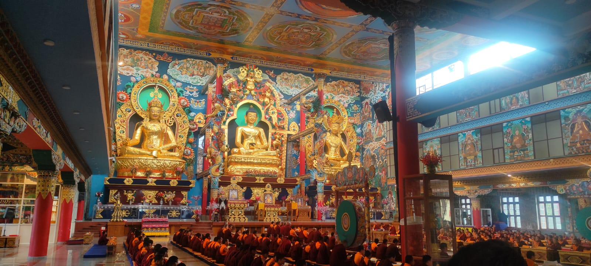
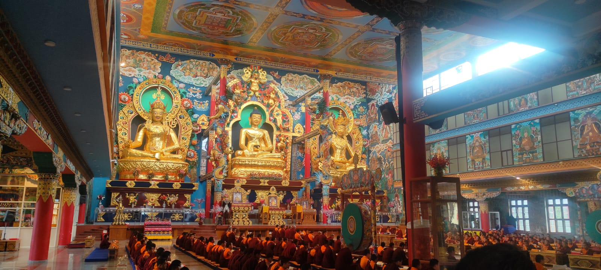

Gokarna
Gokarna offers a perfect blend of spirituality and relaxation. Visit the Mahabaleshwar Temple and then unwind at the serene beaches of Kudle, Om, and Half Moon. Gokarna is also famous for its trekking trails along the cliffs, offering breathtaking views of the sea. Spend your evening watching the sunset by the beach and enjoy fresh seafood at the local shacks.Explore the untouched beauty of Paradise Beach and the calm waters of Nirvana Beach. If you're an adventure seeker, you can try water sports like snorkeling and banana boat rides. Gokarna is a place to disconnect from the world and immerse yourself in the soothing sound of waves.
 
